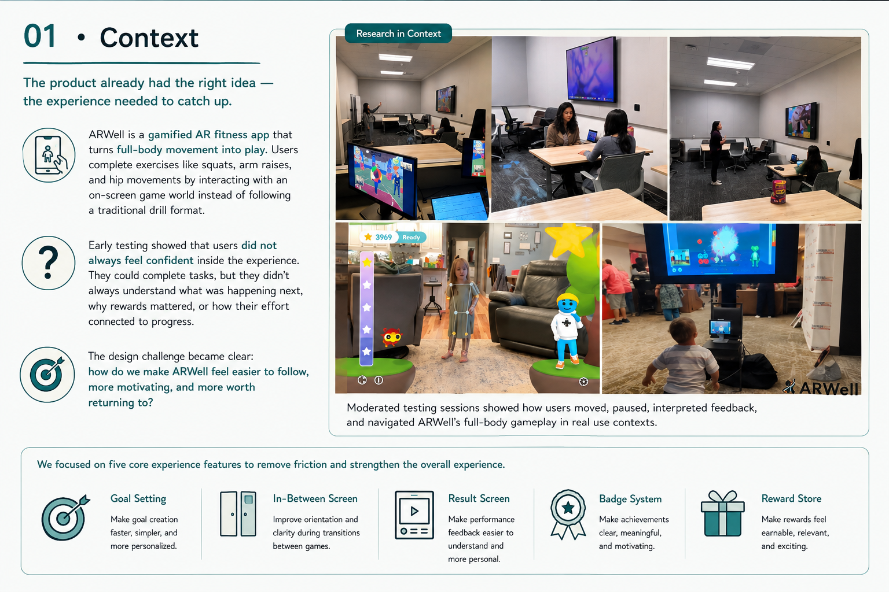
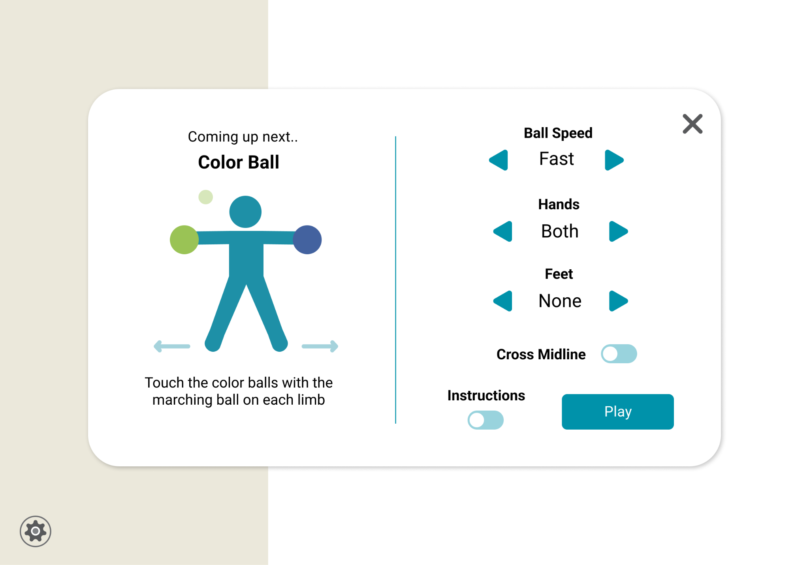
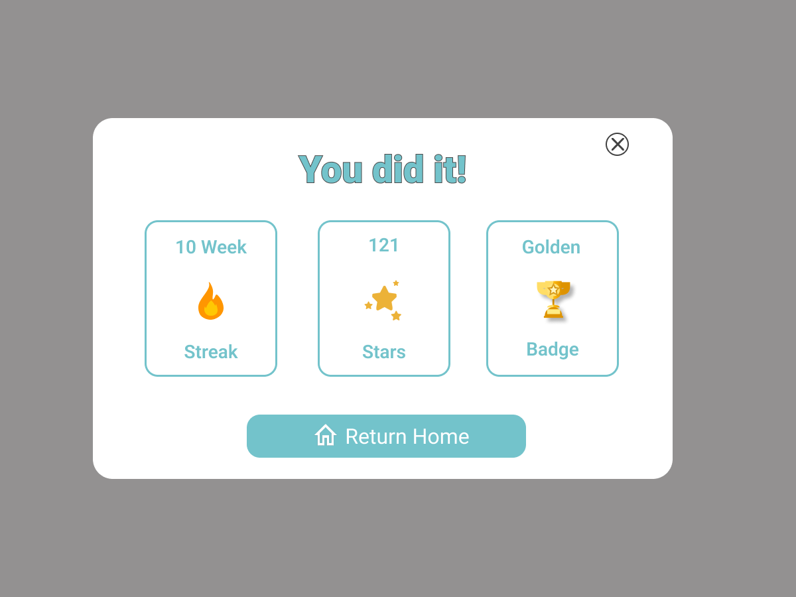
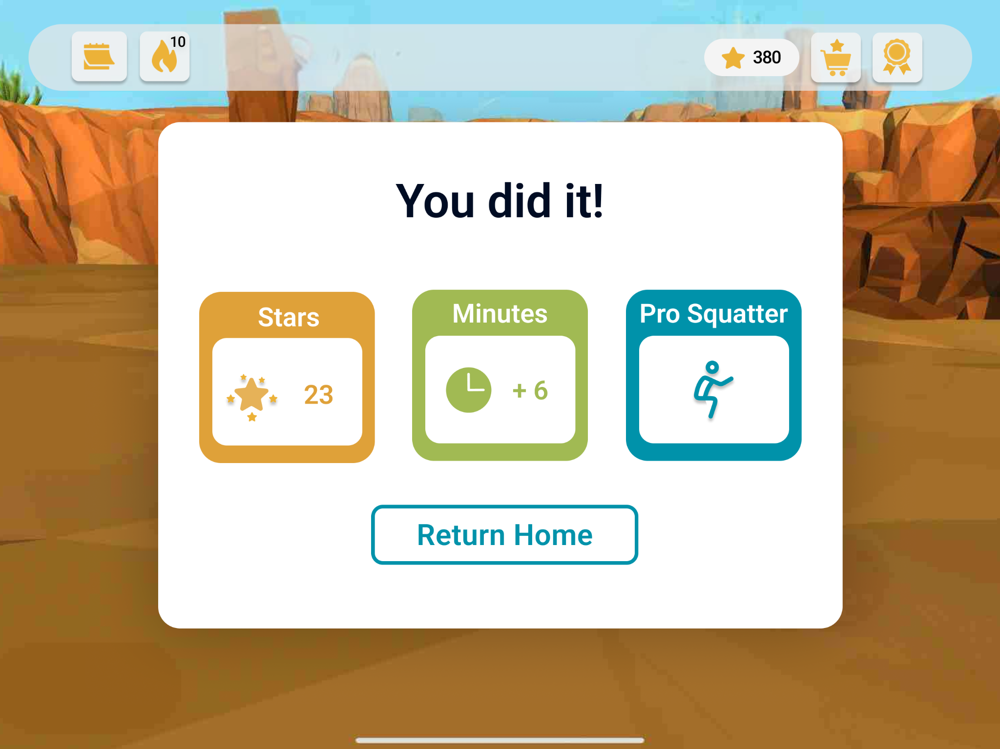
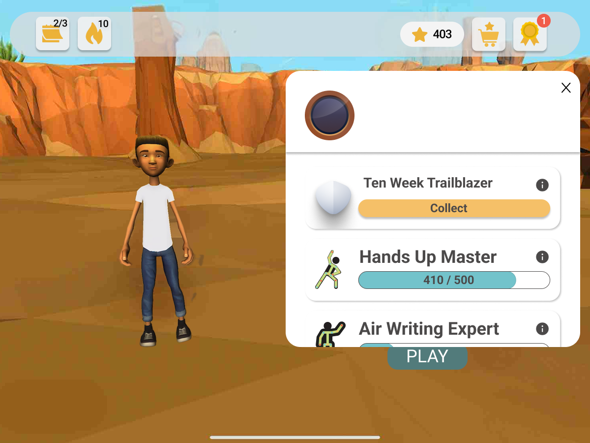
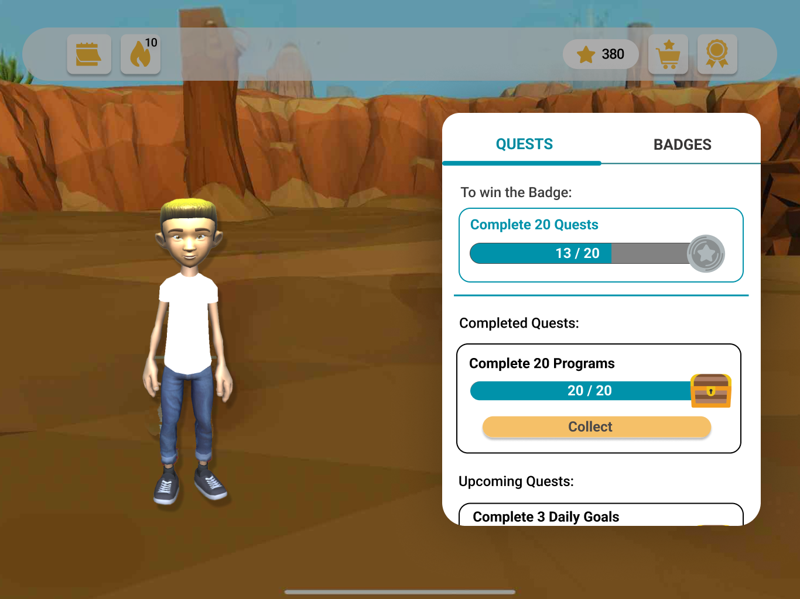
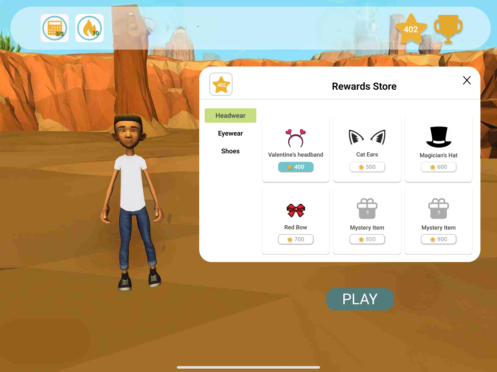
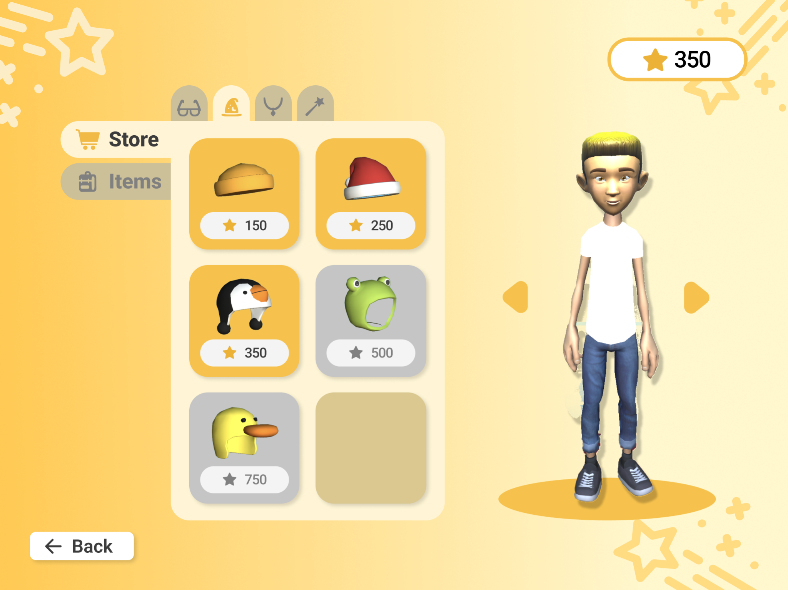

ARWell: Transforming Goals Into Lasting Habits
A gamified AR physical therapy app redesigned to make movement feel clearer, more rewarding, and worth returning to.

1. Project Snapshot
Problem
ARWell had a strong core idea: make physical therapy feel like play. But users didn’t always trust the flow, stay oriented between games, or leave sessions feeling like they had accomplished something worth returning to.
Approach
We ran surveys, interviews, moderated usability tests, and unmoderated Maze studies across 80+ participants to understand where motivation, guidance, and confidence were breaking down.
Key Insight
The issue was not one broken screen. It was the compounding effect of small failures across the experience — goal setting took too much effort, transitions lacked guidance, rewards felt unclear, and progress feedback did not feel personal.
Impact
Redesigning the five core experience features together improved satisfaction and task efficiency by 23% and raised the SUS score from 71.5 to 88.2.
2. My Role
What I owned across research, design, and evaluation
Research Planning
Designed survey, interview, and usability test protocols to understand motivation, guidance, and confidence gaps across ARWell.
Moderated Testing & Synthesis
Facilitated usability sessions, analyzed qualitative feedback, and identified recurring friction patterns across user groups.
Feature Redesign
Owned the end-to-end redesign of Goal Setting and the In-Between Screen, and contributed to prioritization across all five redesigned features.
Prototyping & Testing
Created high-fidelity Figma prototypes, configured Maze tests, and supported moderated and unmoderated evaluation rounds.
Final Evaluation
Synthesized findings into the final research report and sponsor presentation, connecting design changes to SUS, task efficiency, and satisfaction improvements.
3. Context
The product already had the right idea
— the experience needed to catch up
ARWell is a gamified AR fitness app that turns full-body movement into play. Users complete exercises like squats, arm raises, and hip movements by interacting with an on-screen game world instead of following a traditional drill format.
The product had a strong foundation: movement was already playful, visual, and active. But early testing showed that users did not always feel confident inside the experience. They could complete tasks, but they did not always understand what was happening next, why rewards mattered, or how their effort connected to progress.
The design challenge became clear: how do we make ARWell feel easier to follow, more motivating, and more worth returning to?

Goal Setting
Make goal creation faster simpler & personalized.
In-Between Screen
Improve orientation and clarity during transitions between games.
Result Screen
Make performance feedback easier to understand and more personal.
Badge System
Make achievements clear, meaningful, and motivating.
Reward Store
Make rewards feel earnable, relevant, and exciting.
4. Research Process
Three methods, one goal: understand where motivation broke
We used three research methods because each one answered a different question. Surveys showed broad patterns in wellness habits, interviews uncovered why people drop off even when they want to stay active, and usability tests revealed what users actually did when navigating ARWell.
01 · Experience Surveys
n = 45 · Ages 18–64Mapped how people relate to wellness tools, motivation, and long-term exercise habits.
02 · Semi-Structured Interviews
n = 5 · Ages 20–30Explored the gap between intention and behavior — why people lose momentum even when they want to stay consistent.
03 · Usability Tests
n = 41 · Ages 7–43Observed task pathways, confusion points, and feature comprehension across moderated in-person sessions and unmoderated Maze testing.
Together, these methods revealed where motivation, personalization, and guidance were breaking down.
5. What We Kept Hearing
Three patterns that shaped the redesign
Across surveys, interviews, and usability tests, the same friction points kept appearing. Users did not just need better-looking screens — they needed clearer motivation, more personal feedback, and stronger guidance throughout the experience.
01 · Motivation
Users wanted evidence that their effort was building toward something. Without visible progress, meaningful rewards, or a reason to return, each session felt isolated.
“I would use ARWell more if there was a streak system — something that shows my progress and keeps me coming back.” – P9
02 · Personalization
Generic feedback felt indifferent. Users responded more strongly when the app reflected their performance, preferences, progress, or choices.
“It would be cool to give the frog a name, because it feels like your buddy throughout the game.” – P4
03 · Guidance
Uncertainty broke momentum. When users did not know what was coming next, whether they had completed a movement correctly, or what their results meant, they disengaged.
“I want to know the purpose of what I’m doing — what makes me level up, and how often should I do it?” – P8
The redesign needed to make ARWell feel more motivating, personal, and easy to follow — before, during, and after gameplay.
6. Design Iterations
Turning research patterns into five core experience fixes
The research patterns became design priorities. Instead of treating each feature as a separate UI problem, we redesigned the experience around what users needed before, between, and after gameplay: clearer goals, smoother transitions, understandable results, meaningful achievements, and rewards that felt earned.
01 · Goal Setting
Goal creation took too much effort and made a simple weekly commitment feel tedious.
Replaced repeated button taps with an iOS-style scroll picker, circular day indicators, and a confirmation state.
Limited goal tracking with little flexibility.
Why It Mattered
Users could set goals faster, understand their weekly plan more easily, and feel more ownership over their progress.
02 · In-Between Screen
Users missed small transition messages while they were physically active and focused on the TV/game screen.
Replaced the small corner popup with a full-screen transition card showing the next game, exercise focus, icon, and countdown.

Minimal transition guidance that users could easily overlook.

A clearer in-between screen with visual instructions and game setup details.
Why It Mattered
The experience became easier to follow without interrupting the flow of movement.
03 · Result Screen
The results showed performance data, but users did not always understand what the numbers meant or why they mattered.
Rebuilt the screen around session-based stars, minutes played, and personalized exercise.

Generic streak, star, and badge metrics.

Session-specific stars, minutes played, and a personalized exercise achievement.
Why It Mattered
Performance feedback started to feel like accomplishment, not just data.
04 · Badge System
Badges looked decorative, but users could not easily tell what they earned, what was locked, or how to unlock more.
Created earned and locked states, badge names, descriptions, unlock criteria, and a more unified visual system.

Mixed earned and locked badges with no clear labels.

Tabbed badge sections with names, earn descriptions, and a unified illustration style.
Why It Mattered
Achievements became clearer, more meaningful, and more motivating to return for.
05 · Reward Store
The store had unclear item states, limited preview, and weak confirmation feedback, which made rewards feel less trustworthy.
Created a full-screen store with live avatar preview, item categories, clear purchase states, and success confirmation.

Cramped popup, mixed item states, and no purchase feedback.

Full-screen store with live avatar preview, clear tabs, and purchase confirmation.
Why It Mattered
Rewards felt more earnable, visible, and connected to the user’s effort.
7. Results
The redesign made progress easier to understand — and easier to return to
After redesigning the five core experience areas, ARWell tested as clearer, more motivating, and more rewarding. Users were no longer just completing tasks; they were noticing progress, understanding rewards, and asking how to keep going.
The redesigned experience moved from a Grade C usability score to a Grade A experience. +23% Satisfaction & Task Efficiency
Users completed key flows more smoothly and reported stronger satisfaction with the redesigned experience.
Maze testing showed that the redesign held up beyond moderated sessions, with users completing tasks independently.
Users began asking how to earn more badges, whether the app was available to use, and in one case continued into another session without being prompted.
The biggest shift was not just usability. ARWell started to feel more understandable, rewarding, and worth coming back to.
8. Inclusive Design
Designing for movement, attention, and different ability levels
ARWell’s primary users included children and young adults completing physical therapy or wellness exercises, so the redesign had to work beyond a typical app interface. Users were moving, watching a larger screen, interpreting feedback quickly, and sometimes relying on caregivers or therapists for support.
Because direct access to younger child participants was limited, we also considered feedback from adults, caregivers, teachers, and physical therapy perspectives while designing for clearer, more accessible gameplay.
What this changed in the design
Clearer visual hierarchy
Important actions, progress, and rewards were made easier to notice at a glance.
More than text
Icons, motion cues, labels, and visual feedback supported users who might miss or skip written instructions.
Less fine-motor dependence
Interactions were redesigned to reduce repeated tapping and make choices easier to complete.
Immediate feedback
Goal confirmations, result summaries, badge states, and purchase confirmations helped users understand what just happened.
Accessible motivation
Progress was shown through goals, rewards, badges, and session achievements so users could understand effort in more than one way.
Caregiver & Therapist Support
Clearer progress feedback and simple status cues helped support users beyond the screen.
For ARWell, inclusive design meant making the experience easier to follow while users were physically active — not just making the screens visually cleaner.
9. Reflection
What this project taught me about designing for return behavior
ARWell taught me that a product can be functional and still fail to feel motivating. Users could move through the app, complete exercises, and understand parts of the experience, but that did not always mean they felt confident, rewarded, or excited to come back.
- The biggest lesson was that motivation is built through many small moments. A clearer goal-setting flow, a better transition screen, a more meaningful result screen, clearer badges, and a more trustworthy reward store each solved a different problem — but together, they changed how the experience felt.
- I also learned to trust observed behavior over surface-level feedback. Some users said a screen was “fine,” but moved past it in seconds, missed key information, or could not explain what their result meant. That gap between what users say and what they actually do became one of the most important signals in the redesign.
Designing for engagement is not just about adding rewards. It is about helping users understand their effort, feel progress, and know why returning matters.
10. Next Steps
What I would improve next
ARWell’s next opportunity is not just to make movement fun once — it is to make users understand their progress well enough to want to come back.